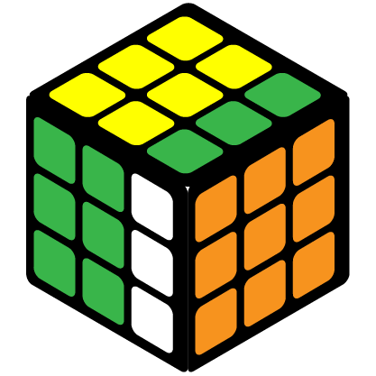
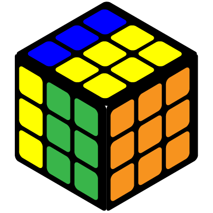
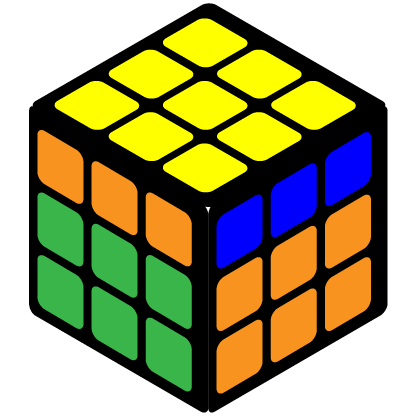
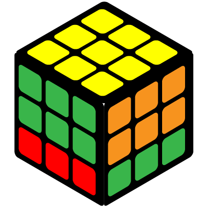
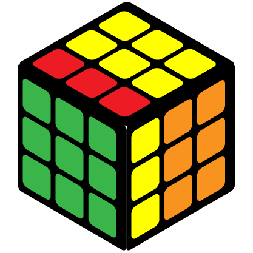
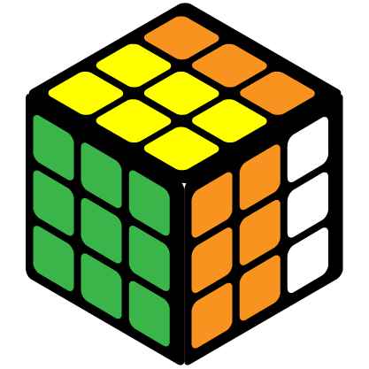
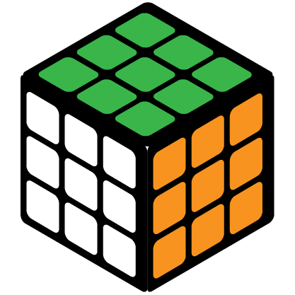
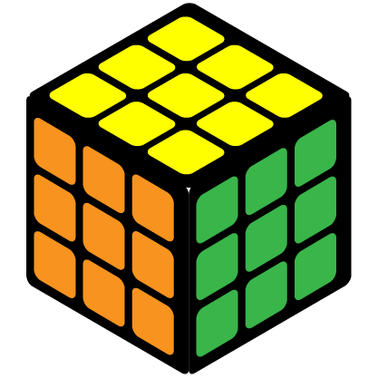
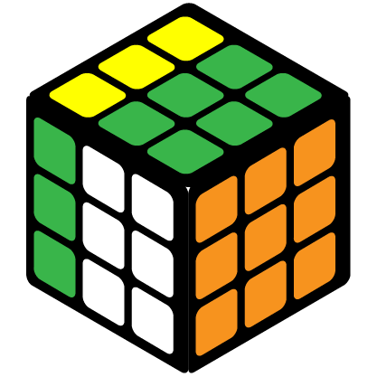

Cube Notations
Cube Notations are actually fairly easy to understand. Once you have mastered the notations, you can tackle any algorithms. Basically only capitalized letters respresents a side of a cube. This means to turn that side of the cube clockwise, but if the capitalized letter has an apostrophe after it, then that side should be turned counter-clockwise. Here is the list of all the 3x3 cube notations you need to know.
| R | Turn the right side of the cube up. If you put the right side in front of you, it is turned clockwise. |  |
| R' | Turn the right side of the cube up. If you put the right side in front of you, it is turned counter-clockwise. |  |
| L | Turn the left side of the cube down. If you put the left side in front of you, it is turned clockwise. |  |
| L' | Turn the left side of the cube up. If you put the left side in front of you, it is turned counter-clockwise. |  |
| U | Turn the top layer to the left. If you look up the cube, it is turned clockwise. |  |
| U' | Turn the top layer to the right. If you look up the cube, it is turned counter-clockwise. |  |
| D | Turn the bottom layer to the right. If you look down the cube, it is turned clockwise. |  |
| D' | Turn the bottom layer to the left. If you look down the cube, it is turned counter-clockwise. |  |
| F | Turn the layer in front of you clockwise. |  |
| F' | Turn the layer in front of you counter-clockwise. |  |
| B | Turn the layer on the back of the cube clockwise. |  |
| B' | Turn the layer on the back of the cube counter-clockwise. |  |
| x | Imagine there is an x axis across the middle of the cube. Turn the whole cube upwards from that imaginary axis. If you look at the right side of the cube, the whole cube is turned clockwise. |  |
| x' | Imagine there is an x axis across the middle of the cube. Turn the whole cube downwards from that imaginary axis. If you look at the right side of the cube, the whole cube is turned counter-clockwise. |  |
| y | Imagine there is a y axis across the middle of the cube. Turn the whole cube to the left from that imaginary axis. If you look up the cube, the whole cube is turned clockwise. |  |
| y' | Imagine there is a y axis across the middle of the cube. Turn the whole cube to the right from that imaginary axis. If you look up the cube, the whole cube is turned counter-clockwise. |  |
| Lowercase (r) | For any lowercase letter, it is turning two layers instead of one. The direction is the same as the notations above. |  |